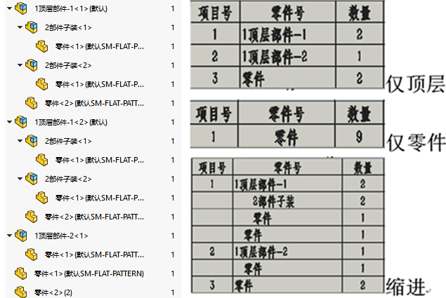
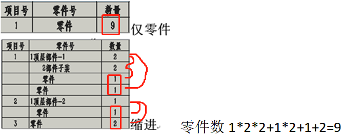
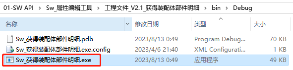
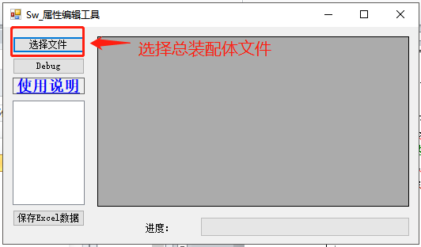
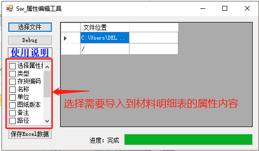
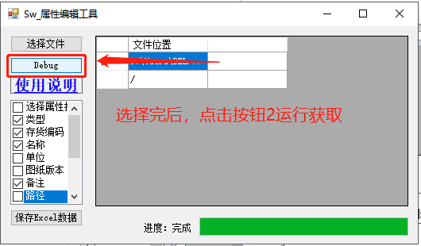
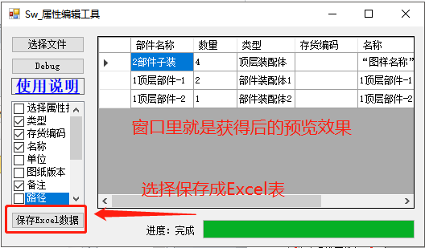
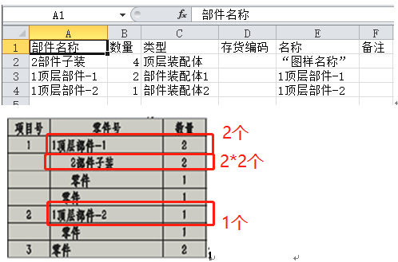

Sw 获得装配体部件明细
版本说明（V1.0）
需求说明：
SOLIDWORKS 的材料明细表截至目前是有”仅顶层”、”仅零件”、”缩进”三种类型。其效果简介如下：
通常我们常用的是”仅零件”类型的材料明细表，用以统计零件单位的清单目录。但是，如果需要统计总装的部件汇总时就比较麻烦。
需要注意的是”缩进”是按层级给部件按成套的数量统计的，可以留意上图”2 部件子装”，我们从实际的数量中发现总数是 4，但是在缩进的材料明细表里数量是 2*2（由上一级的数量按乘法计算得）。再举个例子：”仅零件”下零件的总数是 9，但缩进的数据从单行看的话就是 5，明显不对。需要乘以上一级的套数才是实际数量。
因此，我们希望寻求一种解决方法：将”仅装配体（部件）”做为类型的材料明细表的统计方法。
方法
在该方法中，我们利用对总装里部件的”循环查找”+”部件判断”的方式筛选出仅为子装配体部分。
1 | private void GetAllcomponents(ISwDMDocument swDoc, List<string> strList)//Debug |
通过用 List<string>统计和去重复的部件对象名，这一步可以获得总装里各部件的数量情况。
1 | List<string> strList = new List<string>(); |
材料明细表内容用属性方法获得，其功能类似之前的”Sw_属性编辑工具”
使用
1、打开工具程序
2、选择总装配体文件。注意文件是需要可读（非只读）的状态，并且不要在 SW 软件打开（被占用）。
3、勾选需要显示在材料明细表里的属性内容
4、选完属性后，点击按钮 2 获取内容
5、保存 Excel 表
6、以下是 Excel 软件打开的内容，我们可以对比文章开头的清单数量。可以发现数量正确，”仅装配体（部件）”的材料明细表导出效果完成。
